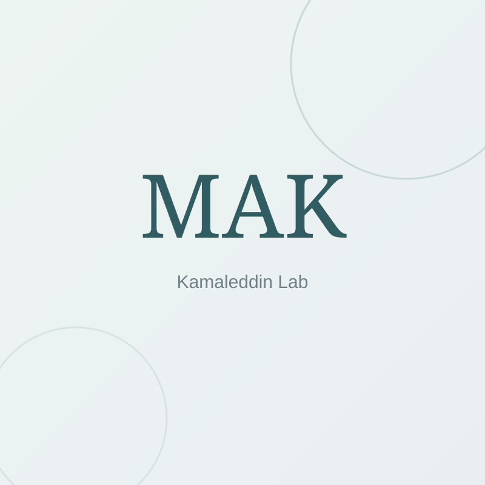
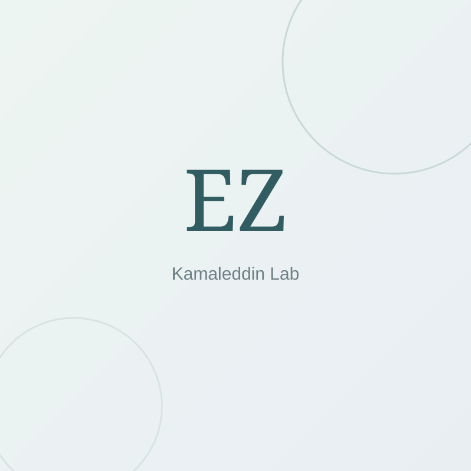
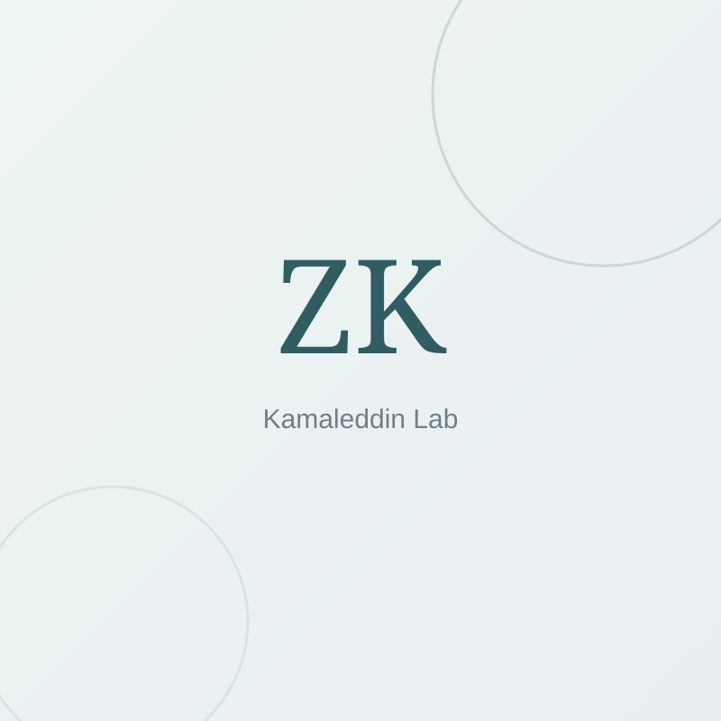
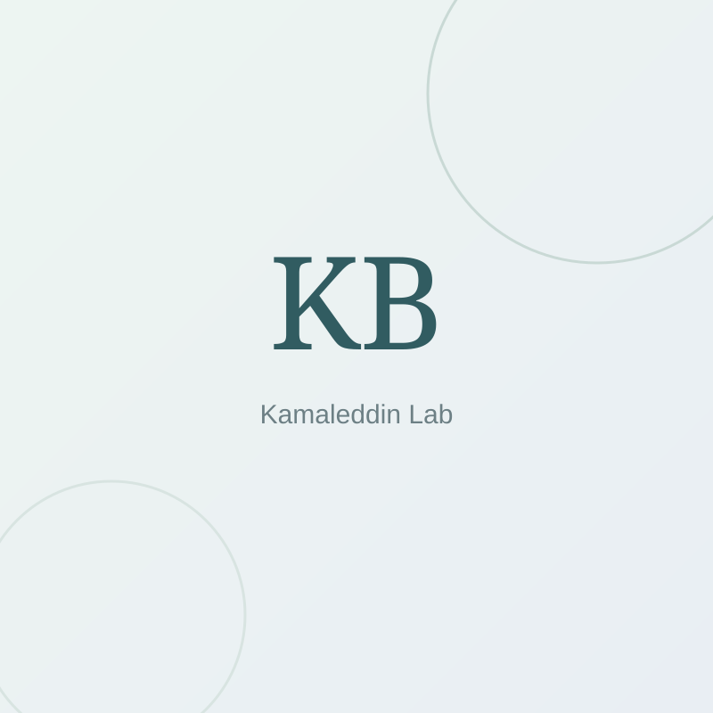
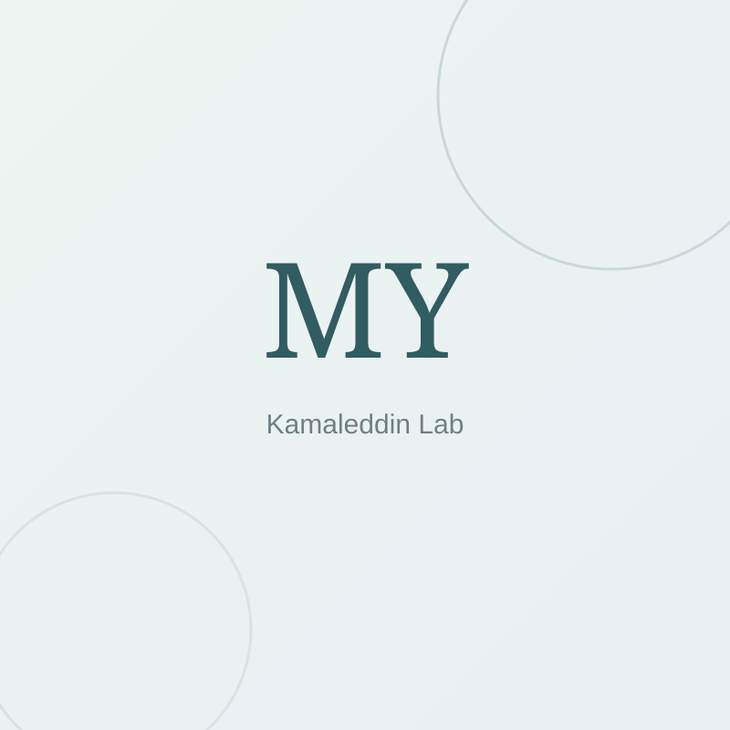

Mohammad Amin Kamaleddin, PhD
Principal Investigator
We build and evaluate AI and neurotechnology that can withstand scientific scrutiny, support human judgment, and move responsibly toward real-world mental health care.
Mental-health AI becomes useful only when technical capability, clinical evidence, and human oversight develop together. Our programs are organized around that premise.
Agentic systems for structured assessment, psychiatric training, psychotherapy evaluation, and decision support.
Program detailsSafety stress tests, model behavior, interpretability, causal machine learning, and population-level evidence.
Program detailsEEG pipelines, neural biomarkers, personalized brain models, and computational approaches to stimulation.
Program detailsA small selection of recent projects that show how the lab moves from architecture to evaluation to translation.
A state-aware architecture separates questioning, interpretation, navigation, and deterministic screening while preserving red-flag escalation and auditability.
Multi-agent evaluation distinguishes expert from novice motivational interviewing and CBT performance and produces targeted feedback for repeated practice.

We evaluate how guardrails shape model behavior when systems encounter contradictory, interruptive, ambiguous, overloaded, and recursive prompts.
A closed-loop AI agent combines EEG tools, component classifiers, reconstruction checks, and human review to make preprocessing more transparent and reproducible.
A focused group of trainees working across clinical AI, evaluation, population mental health, and neurotechnology.





Avatar service used for the PI LinkedIn profile image.
We welcome conversations with clinicians, researchers, engineers, and trainees working on mental-health AI, AI evaluation, causal evidence, EEG, and precision neuromodulation.